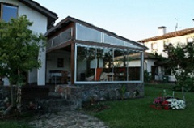
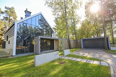
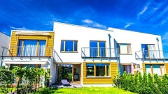

- International school of Latvia
- Kafeinica
- Daba
- Veikals "Elvi"
- Veikals "Maxima"
- Veikals "Lats"
- Pieminieklis
- Baznica
- Ledus Halle
- Nevajag spiest!
{kind=link}
Vēsture
Rakstu avotos Piņķu apkārtne pirmoreiz minēta 1225. gadā, ar 1226. gada 16. marta līgumu to iekļāva Rīgas lauku novadā. 14. un 15. gadsimtos ir minētas Peles, Beberbeķu un Olektes muižiņas. Piņķu draudzes novada (Kirchspiel Pinkenhof) centrs.
Saturs
Piņķi, agrāk, Saliena, ir apdzīvota vieta Babītes novada Babītes pagastā, novada centrs. Atrodas Pierīgā autoceļu A5 un A10 krustojumā Neriņas labajā krastā 15 km no Rīgas centra. Iekļauj savrupmāju ciematus Lielpriedes un Silarājus.
Atteli

Transports
- 4.autobuss
- 32.autobuss
- 43.autobuss
- Piņķi—Babīte—Jūrmalas gatve—Rīga
- Piņķi—Jūrmalas šoseja—Rīga
- Skulte—Piņķi—Rīga
Kultūras dzīve
| Skolas | Kori | Atputas vietas |
|---|---|---|
| Babītes vidusskola | Jauniešu koris "Maska" | Inbox.lv ledus halle |
| Latvijas Starptautiskā skola | Jauktais koris "Atskaņa" | Kafeinica "Gardežu namiņš" |
| Britu skola | Babītes vidusskolas meiteņu koris | Babītes sporta komplekss |
| Exupery International School | - | Deju kolektīvs "Dārta" |